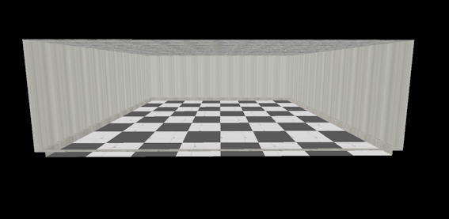
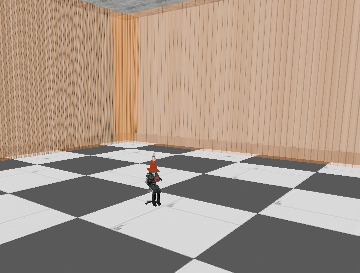

←Back To Main Page
mgen_output_null.bsp

The most common map in the server, null.
mgen_output_null is an empty map containing a grey/black and white checkered floor (Fit for chess. the entire thing is mostly related to chess somehow), Stretched textures on walls and a gray ceiling. There are also killtriggers around the walls, touching them will result in the "Pairing failed!" message that can be seen through killbinding.
The map is used when the server is not using any generated output map. (Mgen stands for Map Generation), It can be described as a waiting room too.

Killtriggers around mgen_output_null (the metrocop is not part of the map, i posed it myself lol)